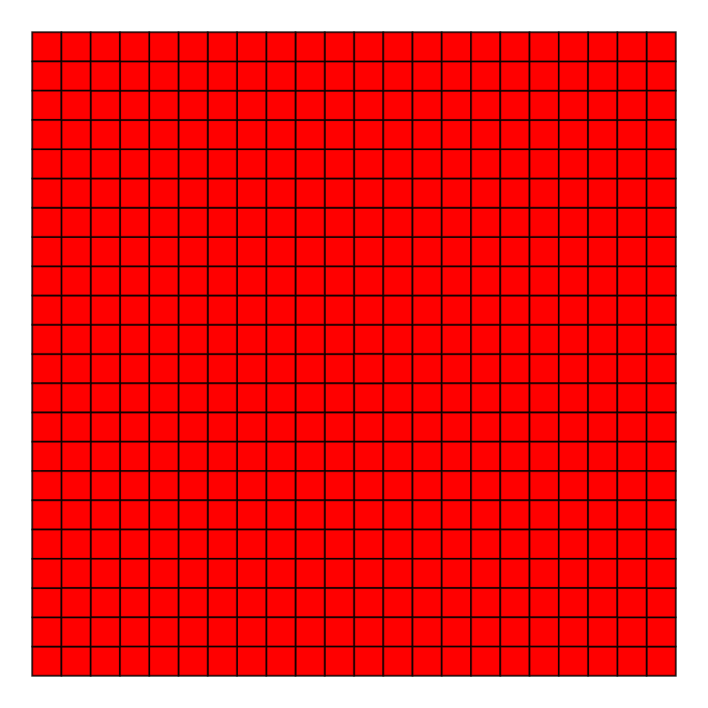
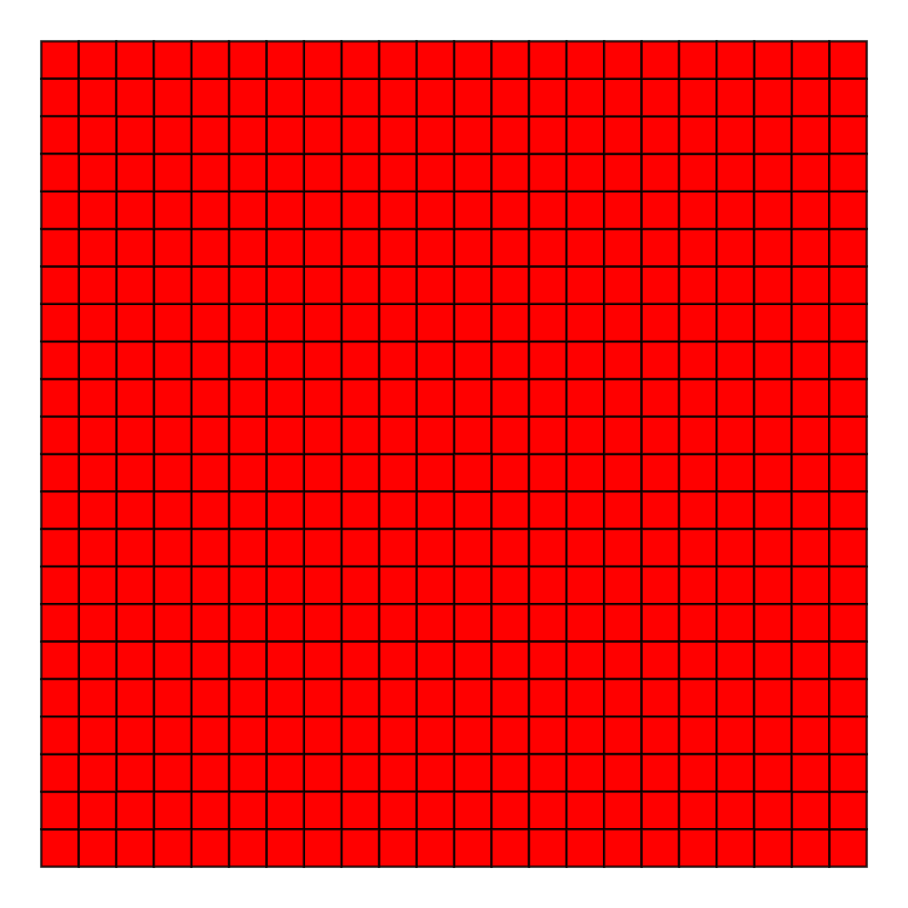

Fishnets and Honeycomb: Square vs. Hexagonal Spatial Grids
In spatial analysis, we often define grids of points or polygons to sample, index, or partition a study area. For example, we may want to overlay a study area with a grid of points as part of some regular spatial sampling scheme, divide a large region into smaller units for indexing purposes as with UTM grid zones, or slice the study area into subunits over which we summarize a spatial variable. In the latter scenario, the most common approach is to use a raster format, in which a grid of uniform square cells is overlayed on a study area and each cell is assigned a value for the spatial variables of interest. In ecology and conservation applications, variables may include number of individuals of a threatened species per grid cell, elevation, mean annual rainfall, or land use.
From my experience, using square cells is by far the most common method for defining grids; however, other options are possible. In fact, any regular tesselation of the plane (i.e. the tiling of a plane with contiguous regular polygons of the same type), can act as a spatial grid. Tessellation is well studied mathematically and there are just three possible regular tesselations: equilateral triangles, squares, and regular hexagons. A forth option is a diamond pattern arising from merging pairs of equilateral triangles; however diamonds are not regular polygons. The following images from Wikipedia1, 2, 3 demonstrate these tessellations:
 


Recently I’ve seen a few instances of the use of hexagonal grids, especially in systematic reserve design, and I’ve become curious about the benefits (and drawbacks) of using them compared to traditional square grids. In this post I’ll discuss the relative benefits and show how to generate different types of grids in R.
Comparing Benefits
I begin by comparing the benefits of square and hexagonal grids. Most of these points come directly from this excellent GIS StackExchange question.
Square grids
Raster datasets are the most ubiquitous type of square grid used in GIS. The most notable benefits of this format compared to hexagonal grids are:
- Simplicity of definition and data storage: the only explicitly geographical information required to define a raster grid are the coordinates of the origin (e.g. bottom left corner), the cell size, and grid dimensions (i.e. number of cells in each direction). The attribute data can be stored as an aspatial matrix, and the geographical location of any cell can be derived given that cell’s position relative to the origin. This makes data storage and retrieval easier since the coordinates of the vertices of each grid cell are not explicitly stored.
- Ease of resampling to different spatial scales: increasing the spatial resolution of a square grid is just a matter of dividing each grid cell into four. Similarly, decreasing the spatial resolution only requires combining groups of four cells into one, typically with some algebraic operation to aggregate the attribute data to the coarser resolution.
- Relationship between cells is given: there is no need for computationally expensive spatial operations to determine distances or the adjacency relationship between cells.
- Combining raster layers is simple: algebraic operations combining multiple raster layers built on the same template simplifies to matrix algebra; no spatial operations are required.
Hexagonal grids
Regular hexagons are the closest shape to a circle that can be used for the regular tessellation of a plane and they have additional symmetries compared to squares. These properties give rise to the following benefits.
- Reduced edge effects: a hexagonal grid gives the lowest perimeter to area ratio of any regular tessellation of the plane. In practice, this means that edge effects are minimized when working with hexagonal grids. This is essentially the same reason beehives are built from hexagonal honeycomb: it is the arrangement that minimizes the amount of material used to create a lattice of cells with a given volume.
- All neighbours are identical: square grids have two classes of neighbours, those in the cardinal directions that share an edge and those in diagonal directions that share a vertex. In contrast, a hexagonal grid cell has six identical neighbouring cells, each sharing one of the six equal length sides. Furthermore, the distance between centroids is the same for all neighbours.
- Better fit to curved surfaces: when dealing with large areas, where the curvature of the earth becomes important, hexagons are better able to fit this curvature than squares. This is why soccer balls are constructed of hexagonal panels.
- They look badass: it can’t be denied that hexagonal grids look way more impressive than square grids!
Grids in R
Required packages
library(dplyr)
library(tidyr)
library(sp)
library(raster)
library(rgeos)
library(rgbif)
library(viridis)
library(gridExtra)
library(rasterVis)
set.seed(1)Study region
In the following demonstrations, I’ll use Sri Lanka as an example study area. The getData() function from the raster package downloads country boundaries from the Global Administrative Areas (GADM) database. I clean this up a little by removing the attribute information and any polygons other than the main island of Sri Lanka.
study_area <- getData("GADM", country = "LKA", level = 0, path = tempdir()) %>%
disaggregate %>%
geometry
study_area <- sapply(study_area@polygons, slot, "area") %>%
{which(. == max(.))} %>%
study_area[.]
plot(study_area, col = "grey50", bg = "light blue", axes = TRUE, cex = 20)
text(81.5, 9.5, "Study Area:\nSri Lanka")
Creating grids
Hexagonal grids
There is no function in R that will directly generate a hexagonal grid of polygons covering a given region; however, it can be accomplished by first generating a hexagonal grid of points with spsample, then converting this point grid to a grid of polygons with HexPoints2SpatialPolygons.
size <- 0.5
hex_points <- spsample(study_area, type = "hexagonal", cellsize = size)
hex_grid <- HexPoints2SpatialPolygons(hex_points, dx = size)
plot(study_area, col = "grey50", bg = "light blue", axes = TRUE)
plot(hex_points, col = "black", pch = 20, cex = 0.5, add = T)
plot(hex_grid, border = "orange", add = T)
A few issues arise with this simple method:
spsamplegenerates a different grid of points each time it’s called because the grid offset is chosen randomly by default. This can be fixed by setting the offset parameter explicitly withoffset = c(0, 0).- Only cells whose centroid is fully within the study area polygon are created. By buffering the study area it’s possible to get full coverage by the grid, which is usually what is desired.
- In some cases it may be desirable to clip the grid to the study area polygon so that cells on the edge match the shape of the study area. This seems to often be the case when setting up a grid of planning units for systematic reserve design. For example, the official Marxan tutorial takes this approach. Clipping can be performed using
rgeos::gIntersection(). - The resolution of the grid is determined by the
cellsizeparameter, which is the distance (\(d\)) between centroids of neighbouring cells. Other ways of defining cell size are the area (\(A\)), side length (\(s\)), or radius (\(r\)), and these are all related by:
\[ A = \frac{3\sqrt{3}}{2}s^2=2\sqrt{3}r^2=\frac{\sqrt{3}}{2}d^2 \]
I incorporate all these refinements into a function that generates hexagonal grids.
make_grid <- function(x, cell_diameter, cell_area, clip = FALSE) {
if (missing(cell_diameter)) {
if (missing(cell_area)) {
stop("Must provide cell_diameter or cell_area")
} else {
cell_diameter <- sqrt(2 * cell_area / sqrt(3))
}
}
ext <- as(extent(x) + cell_diameter, "SpatialPolygons")
projection(ext) <- projection(x)
# generate array of hexagon centers
g <- spsample(ext, type = "hexagonal", cellsize = cell_diameter,
offset = c(0.5, 0.5))
# convert center points to hexagons
g <- HexPoints2SpatialPolygons(g, dx = cell_diameter)
# clip to boundary of study area
if (clip) {
g <- gIntersection(g, x, byid = TRUE)
} else {
g <- g[x, ]
}
# clean up feature IDs
row.names(g) <- as.character(1:length(g))
return(g)
}Using this function I generate a grid of \(625km^2\) (\(25km\) by \(25km\)) cells with and without clipping. This requires projecting the study area polygon to measure distance in kilometers.
study_area_utm <- CRS("+proj=utm +zone=44 +datum=WGS84 +units=km +no_defs") %>%
spTransform(study_area, .)
# without clipping
hex_grid <- make_grid(study_area_utm, cell_area = 625, clip = FALSE)
plot(study_area_utm, col = "grey50", bg = "light blue", axes = FALSE)
plot(hex_grid, border = "orange", add = TRUE)
box()
# with clipping
hex_grid <- make_grid(study_area_utm, cell_area = 625, clip = TRUE)
plot(study_area_utm, col = "grey50", bg = "light blue", axes = FALSE)
plot(hex_grid, border = "orange", add = TRUE)
box()
Square grid
Creating and working with raster datasets in R is well covered elsewhere, for example in the vignettes for the raster package, so I won’t delve too deeply into it. Briefly, RasterLayer objects can easily be created that cover the extent of a Spatial* object. I use a cell size of \(625km^2\) to match the above hexagonal grid, and fill the raster with binary data indicating whether cells are inside or outside the study area.
r <- raster(study_area_utm, resolution = 25)
r <- rasterize(study_area_utm, r, field = 1)
plot(r, col = "grey50", axes = FALSE, legend = FALSE, bty="n", box=FALSE)
plot(study_area_utm, add = TRUE)
In addition to the raster formats defined in the raster package, the sp package offers several options for square grids. The class SpatialPixels is used for partial grids (i.e. not every cell included) and stores the coordinates of all included cell centers. SpatialGrid objects store full grids and do not store coordinates explicitly. Underlying both classes is the GridTopology class, which stores the grid template (origin, cell size, and dimensions). I never use these classes since the raster classes and methods are more intuitive and efficient.
The final option from the sp package is simply to store a square grid as polygons (SpatialPolygons object), just as I did with the hexagonal grids above. In this case, I find the easiest way to define a grid of square polygons is to start with an empty RasterLayer object, coerce it to SpatialPolygons, and clip it as necessary. I incorporate this into the above grid generation function, which now creates hexagonal or square grids as desired.
make_grid <- function(x, type, cell_width, cell_area, clip = FALSE) {
if (!type %in% c("square", "hexagonal")) {
stop("Type must be either 'square' or 'hexagonal'")
}
if (missing(cell_width)) {
if (missing(cell_area)) {
stop("Must provide cell_width or cell_area")
} else {
if (type == "square") {
cell_width <- sqrt(cell_area)
} else if (type == "hexagonal") {
cell_width <- sqrt(2 * cell_area / sqrt(3))
}
}
}
# buffered extent of study area to define cells over
ext <- as(extent(x) + cell_width, "SpatialPolygons")
projection(ext) <- projection(x)
# generate grid
if (type == "square") {
g <- raster(ext, resolution = cell_width)
g <- as(g, "SpatialPolygons")
} else if (type == "hexagonal") {
# generate array of hexagon centers
g <- spsample(ext, type = "hexagonal", cellsize = cell_width, offset = c(0, 0))
# convert center points to hexagons
g <- HexPoints2SpatialPolygons(g, dx = cell_width)
}
# clip to boundary of study area
if (clip) {
g <- gIntersection(g, x, byid = TRUE)
} else {
g <- g[x, ]
}
# clean up feature IDs
row.names(g) <- as.character(1:length(g))
return(g)
}Plotting all four types of grids that make_grid() can generate.
# hex - without clipping
hex_grid <- make_grid(study_area_utm, type = "hexagonal", cell_area = 625, clip = FALSE)
plot(study_area_utm, col = "grey50", bg = "light blue", axes = FALSE)
plot(hex_grid, border = "orange", add = TRUE)
box()
# hex - with clipping
hex_grid_c <- make_grid(study_area_utm, type = "hexagonal", cell_area = 625, clip = TRUE)
plot(study_area_utm, col = "grey50", bg = "light blue", axes = FALSE)
plot(hex_grid_c, border = "orange", add = TRUE)
box()
# square - without clipping
sq_grid <- make_grid(study_area_utm, type = "square", cell_area = 625, clip = FALSE)
plot(study_area_utm, col = "grey50", bg = "light blue", axes = FALSE)
plot(sq_grid, border = "orange", add = TRUE)
box()
# square - with clipping
sq_grid_c <- make_grid(study_area_utm, type = "square", cell_area = 625, clip = TRUE)
plot(study_area_utm, col = "grey50", bg = "light blue", axes = FALSE)
plot(sq_grid_c, border = "orange", add = TRUE)
box()
Working with grids
Once you’ve created a hexagonal grid, you’ll likely want to aggregate some data over the grid cells. Here I demonstrate three common aggregation tasks I often run into: aggregating points, polygons, or rasters. In these examples, I’ll use spatial data for Ecuador.
ecuador <- getData(name = "GADM", country = "ECU", level = 0,
path = tempdir()) %>%
disaggregate %>%
geometry
# exclude gapalapos
ecuador <- sapply(ecuador@polygons, slot, "area") %>%
{which(. == max(.))} %>%
ecuador[.]
# albers equal area for south america
ecuador <- spTransform(ecuador, CRS(
paste("+proj=aea +lat_1=-5 +lat_2=-42 +lat_0=-32 +lon_0=-60",
"+x_0=0 +y_0=0 +ellps=aust_SA +units=km +no_defs")))
hex_ecu <- make_grid(ecuador, type = "hexagonal", cell_area = 2500, clip = FALSE)Point density
It’s often necessary to summarize a set of point features (e.g. species occurrence points), over a grid by calculating the point density, i.e. the number of points within each grid cell. As an example, I’ll look at bird observations in Ecuador from eBird.
eBird is online tool for birders to record their sightings. Each month millions of observations are entered into eBird globally, making it among the largest citizen science projects in history. The Global Biodiversity Information Facility (GBIF) is a repository for biodiversity occurrence records. They store and provide access to hundreds of millions of records from thousands of sources, including eBird. The rOpenSci package rgbif provides a nice interface for importing GBIF records into R.
I grab a subset of eBird sightings for 4 arbitrarily chosen bird families: tanagers (Trochilidae), hummingbirds (Thraupidae), herons (Ardeidae), and hawks (Accipitridae).
bird_families <- c("Trochilidae", "Thraupidae", "Ardeidae", "Accipitridae")
families <- data_frame(family = bird_families) %>%
group_by(family) %>%
do(name_suggest(q = .$family, rank = "family")) %>%
filter(family == canonicalName) %>%
dplyr::select(family, key)
gb <- occ_search(taxonKey = families$key, country = "EC", datasetKey = ebird_key,
limit = 3000, return = "data",
fields = c("family", "species", "decimalLatitude", "decimalLongitude"),
hasCoordinate = TRUE, hasGeospatialIssue = FALSE) %>%
rbind_all %>%
rename(lng = decimalLongitude, lat = decimalLatitude) %>%
as.data.frame
coordinates(gb) <- ~ lng + lat
projection(gb) <- projection(study_area)
gb <- spTransform(gb, projection(ecuador))Now I summarize these sightings over the hexagonal grid to get point density, and plot the data in the form of a heat map.
fill_missing <- expand.grid(id = row.names(hex_ecu),
family = bird_families, stringsAsFactors = FALSE)
point_density <- over(hex_ecu, gb, returnList = TRUE) %>%
plyr::ldply(.fun = function(x) x, .id = "id") %>%
mutate(id = as.character(id)) %>%
count(id, family) %>%
left_join(fill_missing, ., by = c("id", "family")) %>%
# log transform
mutate(n = ifelse(is.na(n), -1, log10(n))) %>%
spread(family, n, fill = -1) %>%
SpatialPolygonsDataFrame(hex_ecu, .)
spplot(point_density, bird_families,
main = "Ecuador eBird Sightings by Family",
col.regions = c("grey20", viridis(255)),
colorkey = list(
space = "bottom",
at = c(-0.1, seq(0, log10(1200), length.out = 255)),
labels = list(
at = c(-0.1, log10(c(1, 5, 25, 75, 250, 1200))),
labels = c(0, 1, 5, 25, 75, 250, 1200)
)
),
xlim = bbexpand(bbox(point_density)[1, ], 0.04),
ylim = bbexpand(bbox(point_density)[2, ], 0.04),
par.strip.text = list(col = "white"),
par.settings = list(
strip.background = list(col = "grey40"))
)
I’ve used spplot() here, and chosen to use a logarithmic scale, which means a big mess of legend parameters. Unfortunately, the data aren’t all that interesting, though I think the maps are pretty!
Polygon coverage
Another common task, is determining the extent to which grid cells are covered by a polygon geometry. This could be in terms of absolute area covered or percent coverage. In the context of systematic reserve design, we may have species ranges as polygons and want to know the amount of each grid cell that is suitable habitat for each species. This can help highlight which cells are of highest conservation value.
As a simple toy example, I use the boundary of Pastaza State.
pastaza <- getData(name = "GADM", country = "ECU", level = 1,
path = tempdir()) %>%
subset(NAME_1 == "Pastaza") %>%
spTransform(projection(hex_ecu))And calculate the degree to which it covers the grid cells. To intersect the polygons I use gIntersection(byid = TRUE) from the rgoes package. Note that with byid = TRUE, the intersection is performed at the level of individual features within the geometry. For each resulting intersection polygon the feature ID is composed of the two source polygon IDs separated by a space. gArea(byid = TRUE), also from rgeos, returns the area for each polygon.
# cell areas
hex_area <- make_grid(ecuador, type = "hexagonal", cell_area = 2500, clip = TRUE)
hex_area <- gArea(hex_area, byid = T) %>%
data.frame(id = names(.), area = ., stringsAsFactors = FALSE) %>%
SpatialPolygonsDataFrame(hex_area, .)
hex_cover <- gIntersection(hex_area, pastaza, byid = TRUE) %>%
gArea(byid = TRUE) %>%
data.frame(id_both = names(.), cover_area = ., stringsAsFactors = FALSE) %>%
separate(id_both, "id", extra = "drop") %>%
merge(hex_area, ., by = "id")
hex_cover$cover_area[is.na(hex_cover$cover_area)] <- 0
hex_cover$pct_cover <- 100 * hex_cover$cover_area / hex_cover$areaFinally, I plot these two cover variables, again using spplot().
# area
p1 <- spplot(hex_cover, "cover_area", col = "white", lwd = 0.5,
main = expression(km^2),
col.regions = plasma(256),
par.settings = list(axis.line = list(col = 'transparent')),
colorkey = list(
space = "bottom",
at = seq(0, 2500, length.out = 256),
axis.line = list(col = 'black'))
)
# percent cover
p2 <- spplot(hex_cover, "pct_cover", col = "white", lwd = 0.5,
main = expression("%"),
col.regions = plasma(256),
par.settings = list(axis.line = list(col = 'transparent')),
colorkey = list(
space = "bottom",
at = seq(0, 100, length.out = 256),
axis.line = list(col = 'black'))
)
grid.arrange(p1, p2, ncol = 2, top = "Ecuador: Coverage by Pastaza State")
Again, these data are not very interesting, but the example is illustrative.
Raster aggregation
One of the most common operation I find myself doing with hexagonal grids is aggregating raster layers over the grid cells. For example, elevation or climate variables in raster format might be averaged over hexagonal grid cells, then used to parameterize a species distribution model.
The getData() function from the raster package provides access to elevation and climate raster datasets. As an example, I’ll use the SRTM elevation dataset, which has been aggregated to 1km resolution. First, I download, crop, and reproject this dataset.
srtm <- getData('alt', country = 'ECU', path = tempdir()) %>%
projectRaster(t_crop, to = raster(hex_ecu, res=1)) %>%
setNames('elevation')To average this raster dataset over the hexagonal cells, I use the extract() function from the raster package. By default this function returns values from all raster cells that intersect with a given input geometry; however, with parameters fun = mean and sp = TRUE it will average the raster over each polygon and return a SpatialPolygonsDataFrame object with this information.
hex_srtm <- extract(srtm, hex_ecu, fun = mean, na.rm = TRUE, sp = TRUE)
p1 <- levelplot(srtm,
col.regions = terrain.colors,
margin = FALSE, scales = list(draw = FALSE),
colorkey = list(
#space = "bottom",
at = seq(0, 6000, length.out = 256),
labels = list(at = 1000 * 0:6,
labels = format(1000 * 0:6, big.mark = ","))
)
)
p2 <- spplot(hex_srtm,
col.regions = terrain.colors(256),
at = seq(0, 4000, length.out = 256),
colorkey = list(
labels = list(at = seq(0, 4000, 500),
labels = format(seq(0, 4000, 500), big.mark = ","))
)
)
grid.arrange(p1, p2, ncol = 2, top = "Ecuador SRTM Elevation (m)")
The raster package makes this aggregation task extremely easy, just a single line of code! I’ve also used levelplot() from rasterVis, which provides a nice system for mapping raster data.
Footnotes
1 “1-uniform n11” by Tomruen - Own work. Licensed under CC BY-SA 4.0 via Commons - https://commons.wikimedia.org/wiki/File:1-uniform_n11.svg ↩︎
{kind=link}
2 “1-uniform n5” by Tomruen - Own work. Licensed under CC BY-SA 4.0 via Commons - https://commons.wikimedia.org/wiki/File:1-uniform_n5.svg ↩︎
{kind=link}
3 “1-uniform n1” by Tomruen - Own work. Licensed under CC BY-SA 4.0 via Commons - https://commons.wikimedia.org/wiki/File:1-uniform_n1.svg ↩︎
{kind=link}
Matt Strimas-Mackey
Data Scientist
I am a data scientist at the Cornell Lab of Ornithology using data from the citizen science project eBird to inform bird research and conservation.